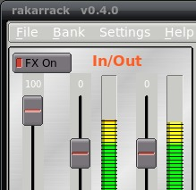
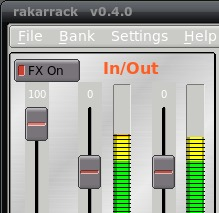Command line options The Main Screen Connecting Presets & banks Preferences Shortcuts
RAKARRACK is a multi-effect processor for guitar players but the signal processing engine allows a full range of parameter adjustment making it suitable for almost any audio processing task. Forty-two effects are included in this version: Lineal EQ, Parametric EQ, Shuffle, Exciter, Compressor,Expander, Distortion, Overdrive, Derelict, DistBand, Echo, MusicalDelay, Arpie, Chorus, Phaser, Analog Phaser, Flanger, Dual Flange, Reverb, WahWah, AlienWah, MuTroMojo, Convolotron, Cabinet, Valve, AutoPan/Extra Stereo, Harmonizer, Noise Gate, Ring, Synthfilter, VaryBand, Looper, MuTroMojo, Echoverse, CoilCrafter, ShelfBoost, Vocoder, Sustainer, Sequence, Shifter, StompBox, Reverbtron and Echotron.
Ten can be used simultaneously on a chain.
Also Rakarrack has a Tuner and a monophonic MIDI Converter, and other features like resampling or Tap Tempo.
Rakarrack can be managed externally by MIDI, the program receive Program Change and the parameters can be controlled via Control Change MIDI messages.
One of the most important things of RAKARRACK is that everything is on a single mouse click. All the effect parameters are on the screen.
The effects are processed on a chain, the chain order processing is fully configurable by the user for each preset. The preset saves all the effects parameters. These presets can be grouped into banks to manage more efficiently. Saving a preset is as easy as typing a name.
Rakarrack is capable of generating high volume output. It has Gain controls in general and some of the effects allow high gain adjustments. Use these gains with caution because they can produce unwanted effects. However, a limiter is applied to the final output which prevents signal level from increasing beyond 0dB. Bear this in mind, for high gains triggering limiting in the output will initiate high-ratio hard-knee compression. This is better than hard clipping distortion, but the audio effect can be undesirable.
Rakarrack is a JACK application, Dave Phillips wrote some good articles in their blog of how to use Linux audio with jack, if you don't know about jack, or you have problems running rakarrack, please read this series of articles:
Troubleshooting Linux Audio, Part 1
Troubleshooting Linux Audio, Part 2
Troubleshooting Linux Audio, Part 3a
Troubleshooting Linux Audio, Part 3b
Please read the INSTALL, README and PACKAGERS.README files provided with rakarrack. You will find there a list of required dependency packages and detailed configuration options.
From 0.5.0 version we have included resampling and convolotron effect, the quality and amount settings of resampling must be set with extremely care, because they use a lot of CPUresources, in fact most computers can't afford the "Best" resampling quality if the amount of resampling is "x4" or greater. The resampling process makes each effect use more CPU resources because need to process more samples, if you combine wrong settings with convolotron or harmonizer effects that use also a lot CPU resources the results can be unpredictable. Wrong settings can hang up you computer. You have been warned.
Of course resampling increase the sound quality, the way to set up is start with the worst resampling settings, amount = "x2" and Quality "Linear", the the jack load CPU value is displayed in the status bar in the preset block, if you want more accurate CPU usage values use top, htop or other CPU monitors, then increase the values thinking that then next step of quality could use double CPU than the actual set, that's not exactly in the lower resampling quality levels, but is more or less accurate in the high levels. You need to find a good balance between amount and quality settings to obtain the better sound that your computer can afford. Don't forget that each effect use also more CPU with resampling, then the best to set the resampling settings is using a preset that has five or six effects.
Convolotron has a "Safe Mode" parameter, that "magically" limits the length of the Impulse Response file read, this is safe because limit the CPU usage, this maximum length is calculated reading the bogomips, is not dynamic and don't measure other tasks that your computer may be performing. We have been careful to calculate this maximum value, but if you use resampling this "safe" value can be ridiculous and may cause depending of the Impulse Response file read that the convolotron effect don't has sound, that can happens if the value is less than 5 ms.
Of course increasing the length parameter you will obtain a better convolotron sound, if you unset the "Safe Mode" you can set the length to a desired value without the magical limit, but do that with extremely care. Check the jack load CPU in the status bar or use a CPU monitor to see what your computer can afford. Do that with small steps and checking the CPU usage, or you will hang up your computer. You have been warned.
About Clipping and limiting.
Rakarrack includes an output limiter to help you keep the signal at or below maximum recording levels. There are two indicator lights along the top of the display to indicate when limiting and clipping is active.
Lmt Limit. This is the compressor part of the limiting function. This lets you know when Rakarrack output limiter is automatically reducing volume when the signal level is too high.
Clip The output limiter is clipping the peaks of the signal. Usually the attack of dynamics are clipped for short periods of time before the compressor catches up with the high signal level. When the signal level is extremely high, the peaks will always be clipped. This is indicated with a red flashing light.
Both clip and Lmt mean the same thing to you as the user: Turn down the output until the lights don't blink, or if they blink, very very infrequently. Any time the lights blink, there is some distortion on the output, and it is probably unwanted distortion. It will be noticeably audible distortion if the lights blink frequently, or for long periods of time.
This is not an arbitrary limit. This is at the limit where the input to a recording program such as Ardour or Qtractor will be too hot. If it was not clipping in Rakarrack, it would be clipping in Ardour, and would be worse sounding. Most sound cards will physically clip on the hardware output at these levels. The full range in Rakarrack will produce a full range signal swing.
|
Short Format |
Long Format |
|
|---|---|---|
|
-h |
--help |
Shows the command line options and exits. |
|
-n |
--no-gui |
Start the application without GUI |
|
-l file |
--load=file |
Load file single Preset |
|
-p # |
--preset=# |
Set Preset number # |
|
-b file |
--bank=file |
Load a file Bank |
|
-x |
--dump-preset-names |
Dump Bank preset names |
rakarrack -l mypreset.rkr Starts Rakarrack and load the preset file mypreset.rkr
rakarrack -n -b mybank.rkrb Starts Rakarrack without GUI and load the bank file mybank.rkrb
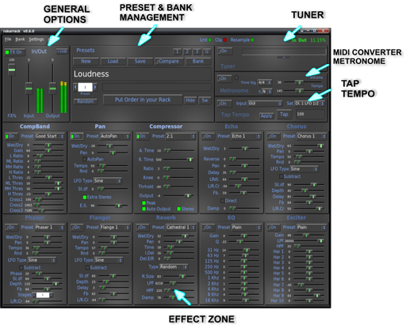
The connections shown in the screenshot correspond to a motherboard sound card. The guitar is connected to the input line. Obviously this configuration can vary depending of your sound card. RAKARRACK has two inputs to allow use of stereo devices. The screenshot shows the connection of a guitar, usually mono aural.
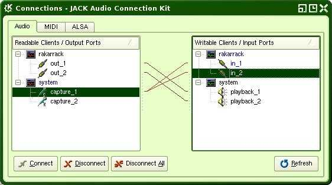
The state of the rack can be saved to a file at any time, either pressing the "Save" buttons or via the menu File->Save Preset. Rakarrack suggest the preset name for the filename.rkr in the save operation, but you can put what you want. You can assign the preset name here:
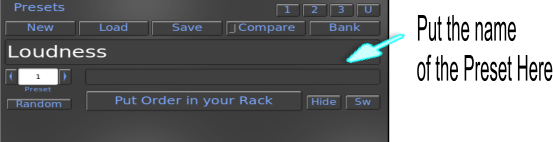
If the user modifies any preset bank, The "compare" button allows you to compare the sound of the current state of rakarrack with the original bank preset from which it departed.
You can use banks to store groups of presets. 60 preset can be saved on a bank. To include a preset in a bank must first indicate the name of preset on the main screen, open the bank window and click on a empty slot with the right mouse button. To retrieve a preset stored in a bank must open the window of banks and clicking the left button on the preset desired, also you can use the Preset selector of the main window.
To save a preset in a bank:
Put descriptive name to the preset
Open the bank window (B)
Press the right mouse button in a empty place OR
Press the right mouse button on an existing preset if you wish to overwrite it.
To retrieve a preset from a bank:
Open the bank window (B)
Click the left mouse button on the preset
To swap presets in the window:
Open the bank window (B)
Click the left mouse button on the preset, drag and drop on the preset you want to swap
When rakarrack starts always load the bank selected in preferences unless you specify another bank in the command line. Of course you can load/save any bank via menu File. By default, is allocated in preferences the installation included bank. This bank ("Default.rkrb") is installed with root properties, then you can't overwrite as user. But is easy to save in any place to work with it. The bank contains default presets developed by the development team and some friends who have contributed in this facet.
The "Random" button generate a random preset
Three banks are released with rakarrack, Default.rkrb, Extra.rkrb and Extra1, they are installed in the data directory selected in the configure process normally in "/usr/share/rakarrack" or "/usr/local/share/rakarrack".
The purpose of buttons "1", "2", "3", "U" is fast bank load function, this buttons loads the Default.rkrb, Extra.rkrb, Extra1.rkrb and the user settings defined banks.
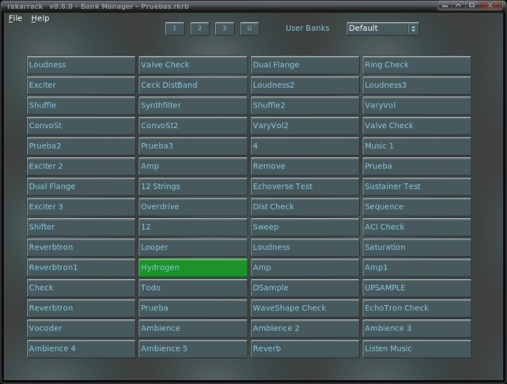
Up the Bank windows screenshot, the tittle bar show the loaded bank. Click on preset or use preset counter in the Preset section to change the preset.
Presets marked with (*) use the Select mode in the Harmonizer effect, that means you need to play a monophonic melody in the Key/Chord selected. The harmonizer recognizes what note you play and creates a second voice in the Key/Chord selected.
Buttons 1,2,3,U are for fast load banks, the 1,2,3 loads the Default, Extra and Extra1 banks released with rakarrack, the "U" button, that means user, load the Bank filename defined as default to load in settings.
The choice display the available user banks that you have in the directory specified in the User Directory settings, is also a fast way to load "user" banks
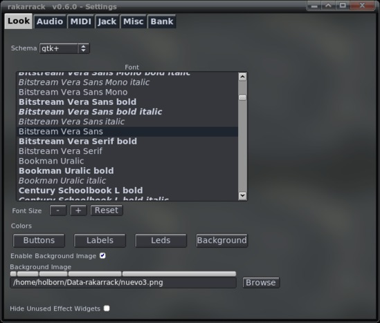
Colors
Through the Settings Look tab window you can configure different aspects of the application. The colors of he four elements on the screen, background, buttons, labels and leds.
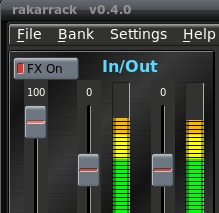
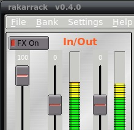
Scheme
Also you can select the following schemes of widget decoration, X11, fltk, gtk+ y plastic. Some small example of fltk and plastic.
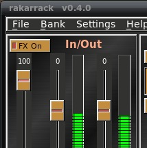 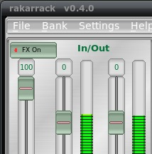
Font
Select the label font for the main window.
Font Size
Increase/Decrease the font size of some windows.The Reset button set the relative value to "0"
Enable Background Image
Enable background image or use background color
Background Image
You can also select a PNG background image clicking on the 'Browse' button and also adjust the font sizes. Some background pictures are distributed in the rakarrack tarball package, they are installed in the data directory selected in the configure process normally in "/usr/share/rakarrack" or "/usr/local/share/rakarrack".
The Skin save/load menu options located in the main menu save or restore the rakarrack look. If you have made a nice look and you want to share please send this file and the background picture to any of the rakarrack team members and will include on the website.
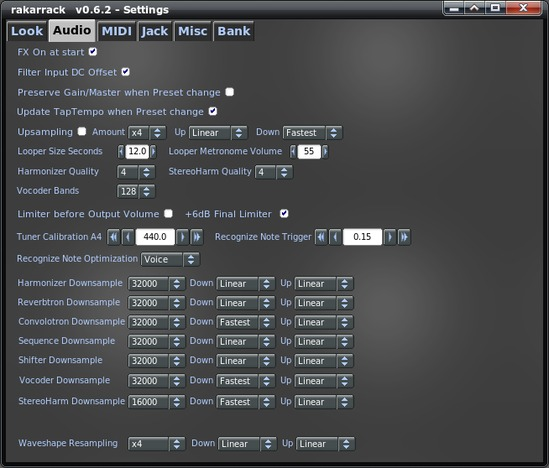
Fx On at start
This option put the FX On at the start, by default is Off.
Filter Input DC Offset
Input DC Removal. Removes constant offset from input signal. If you experience strange behavior with compressor or distortion, or if you see output signal even when no sound is going in, enable it. A "cheapo" soundcard or microphone inputs can be sources of this problem.
Preserve Gain/Master
The Input Gain and Master Volume are stored in the preset and applied with the preset is loaded. If this option is enabled, the Input Level and Master Volume will not be modified when preset changes.
Update Tap Tempo
If enabled each time you change the preset the Tempo parameter on the active will be updated with the Tap Tempo value/settings. By default, the Tempo settings from the preset are used.
Upsampling
Enable upsampling using libsamplerate. With this enabled, Rakarrack will process the effects with higher sample rate than what is coming from the sound card. All the resample parameters will take effect the next time you launch rakarrack. Enabling upsampling in Rakarrack will use a lot more of your computer CPU resources but will result in very professional sounding effects. Take care to adjust all the upsampling settings in small increments because you can hang your computer if your main processor can not handle the resampling parameters. Each level of libsamplerate quality uses more and more resources, and of course each effect uses more CPU resources because it needs to process a higher amount of data in the same amount of time. We highly recommend start with Linear quality and amount "x2" and check your CPU usage with "top", and then increase the amount/quality as desired.
Amount
Amount of resampling (x2, x3, x4, x5, x6). This is a multiple of your Jack samplerate.
About Resampling Quality
Here is the summary:
Best Best sinc interpolation.
Medium Reduced Bandwidth sinc interpolation.
Fastest Fastest sinc interpolation.
Linear Linear interpolation, not band-limited.
Zero Order Blazingly fast, but does not interpolate.
The only difference between Best, Medium, and Fastest is the bandwidth. "Fastest" limits to 80% of the maximum bandwidth, but the interpolation quality is equal to Best sinc interpolation. As a general rule, you can often save some processing requirement by using a lower quality upsampling setting (Linear, or Zero Order), but it is important to use high quality downsampling if any of the effects you use add higher harmonics not present at the input (distortion, Arpie, Harmonizer).
If using Linear or Zero Order resampling it is advisable to use a low-pass filter on the input (like CoilCrafter or MuTroMojo), then again as the last in line. The filter will perform interpolation before the signal is processed.
Resampling has two uses:
1) Improve the "richness" of filters & Equalizers. This will by nature improve the accuracy of the EQ's while making filter effects such as Chorus, Flanger or Phaser sound more natural.
2) Reduce the amount of aliasing effect produced by nonlinear distortion. Aliasing: A digital signal cannot represent any frequency higher than 1/2 the sampling rate. Any frequencies introduced to the digital system higher than 1/2 sample rate are folded back (aliased) into the 0 to 1/2 sample rate range. Generally aliased frequencies are not musically related to the original tone, and are often the cause of the harsh "digital distortion" sound.
When you use a Distortion effect (StompBox, Valve, Overdrive, etc.) the nonlinear function used in waveshaping produces harmonics that are not found in the original signal. Many of these harmonics are significantly higher than 20kHz, and even go to several hundred kHz. The solution is upsampling. If you increase the samplerate to several times the original, then the "headroom" you have available to represent these high frequency harmonic components increases. Since the harmonics decrease in amplitude as frequency increases, then there comes a point where the aliasing of these frequencies is inaudible.
The caveat is downsampling. If you upsample then create these higher harmonics, you have to filter this out of the signal before you downsample. The sinc interpolation settings are band-limiting by nature, and this is what you want if you regularly use distortion. The process of sinc interpolation removes any frequencies higher than 1/2 the target samplerate before resampling. It is better to use 2x upsampling with linear up and fastest sinc down than to use 4x linear or zero order up/down with distortion. A downsampling process that is not band limited to 1/2 target sample rate will defeat the purpose of upsampling. If your CPU can handle it, the best is 6x upsampling with fastest sinc for up and down.
Unless you really need the 16kHz to 20kHz range in your instrument, don't use Medium or Best. Indeed these improve bandwidth, but the transient filter response is worse with increasing interpolation quality. Particularly for dynamic or percussive instruments, "Fastest" sinc interpolation is the highest quality you can use.
If your CPU can't handle the high quality interpolation, you can put MuTroMojo on the end of the FX chain and balance between filter cut-off frequency and stages to get good rejection at 16-20kHz.
Finally, it is mathematically proven that sinc interpolation with infinite length will PERFECTLY reconstruct the original analog input signal in the case of infinite upsampling. This will also perfectly reproduce what the signal would be if sampled at the higher samplerate (since infinite upsampling is impossible). Another impossible thing is an infinitely long sinc function. Sinc interpolation uses a Windowed Sinc function of a length where the imperfections introduced by truncation create errors of magnitude less than the anticipated noise floor. Based on this theory, many high end CD players use up to 128x oversampling in the digital-to-analog conversion process.
For somebody who doesn't understand mathematics, this means that you don't get ugly distortions by downsampling, say to 16kHz, then back to 48000. You only lose bandwidth. Downsampling to 16kHz then back to 48kHz is no worse than applying a low-pass filter at 6.4kHz (80% of 16kHz/2) for fastest sinc, while you will gain some bandwidth nearing 8kHz for Best quality sinc. Most amp cabinet responses tend to roll off near 5kHz or 6 kHz. For reverb, this is not much different than increasing the "damp" parameter. Limiting bandwidth near 6.4kHz means you don't lose as much quality as you would think from what seems such an abysmally low samplerate while it is amazing how little CPU usage is required to use Reverbtron and Convolotron with internal samplerate set this low. If you use linear or zero order, all bets are off -- unless you apply band limiting filtering elsewhere, or know for a fact that the input signal does not have any harmonics above 8kHz. Incidentally, you can probably get some amazingly high quality bass + bass cabinet sounds with Convolotron set to 16kHz internal samplerate.
Up Sampling Quality
Upsampling quality, select the libsamplerate quality for the upsampling procedure.
Down Sampling Quality
Downsampling quality, select the libsamplerate quality for the downsampling procedure.
Looper Size Seconds
Is the size in seconds of the buffer for the Looper effect. The memory is allocated when Rakarrack starts, so you will need to restart Rakarrack for this to take effect. If you don't plan to use the Looper, then make this a small number so Rakarrack doesn't hog memory you aren't going to use.
Looper Metronome Volume
This is to up/down the Looper Metronome Volume
Harmonizer Quality and StereoHarm Quality
Selects the quality of the harmonizer audio engine, used by Harmonizer, Shifter and Sequence effects, the available values are "4,8,16,32", the default value is "4". Incrementing the quality increments the CPU usage by this effect. Take specially care if you are using resampling too. This parameter will take effect the next time you run rakarrack.
Limiter before Output Volume
Rakarrack uses an invisible end chain Limiter to limit the output signal level. This option put the limiter before the Output Volume slider
The Limiter is a hard-knee compressor with a fast attack time followed by peak clipping. It is best to leave this as default since it will have no effect unless the final output signal is high enough to clip on the input or Ardour (or other recording program). Reasons you may wish to put this in front of the volume control are as follows:
1) It produces a nice overdrive when driven by something "hot" like ShelfBoost. Then you can overdrive it and use output volume to bring signal level down to a reasonable recording level.
2) If you need a hard limiter to set the maximum to a certain level, this may prove to be a useful tool.+6dB Final Limiter
This option add 6 dB to the final chain Limiter output signal
Harmonizer, Reverbtron, Convolotron, Sequence, Shifter, Vocoder and StereoHarm Downsample
Here you can select the sample rate that each effect uses internally, This can make it possible to use effects with higher CPU demand simply by trading bandwidth. For example, if you are resampling at 2x or 3x (master resample setting), you will need to limit the sample rate of some effects in order to be able to use certain presets. Of course that may reduce the sound quality, but certainly you can find a good balance between CPU power and quality. Keep the "About Resampling Quality" information in mind when deciding what to select.
Whaveshape Resampling
Distortion, Overdrive, Derelict, MBDist and StompBox effects use the waveshape internal class to saturate the signal, this kind of process produce aliasing. Here you can resample in order to eliminate this aliasing, of course that will cost CPU. Notice that this resample is multipied but the normal resampling. For example, if master resampling is 2x, and you select 2x for Waveshape, then Waveshape internal resampling will be 4x jack sample rate. The balance you need to find is between number of resampling operations, quality of resampling, and resampling amount. For example, if you are only using Stompbox and maybe reverb in a preset, then it may be better to set 4x fast sinc interpolation for master resample than to use Waveshape resampling. If you are using other effects, and some higher CPU effects, then it may be better to use 2x master resample with linear up/down, then 2x Waveshaper resample with linear up, fastest sinc down.
Tuner Calibration A440
Here you can calibrate the Tuner, this also calibrates the MIDI Converter, Ring and Harmonizer recognize note functions.
Recognize Note Trigger
This is the trigger for the Recognize Note function used in Harmonizer, StereoHarm and Ring, default value is ".6" but maybe you can get better results if you down dis value. The note recognition dependes also of the input level signal, you need to find a good balance between this value and the input signal level.
Recognize Note Optimization
This option filters the data sended to the Recognize Note functions to the specified frequency range of various instruments
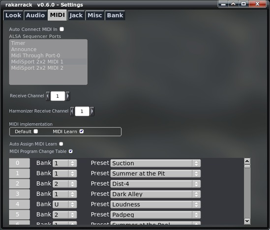
Auto Connect ALSA Sequencer Ports
Here you can select if you want to auto connect the rakarrack MIDI IN to another device when the program starts, and you can select the device, also when the program is running you can connect here o use other utilities to do that.
Midi Channels
You can specify the MIDI Receive Channel for rakarrack also there are a special channel to receive the MIDI Chords for the Harmonizer.
Midi Implementation
The MIDI Implementation radio buttons selects how rakarrack interpret the incoming MIDI Control messages, by default we use our MIDI implementation table, but you can also use MIDI learn to create your own tables.
Auto Assing MIDI Learn
If you enable this option you will not see the MIDI learn window when you rigth click over a MIDI controllable effect parameter, the incoming MIDI control message will be assigned "automagically".
MIDI Program Change Table
A table to select the Bank/Preset you want when a MIDI Programchange message is recived. (0~127). If the option is disabled rakarrack will only recognize program change (1~60) in the current bank.
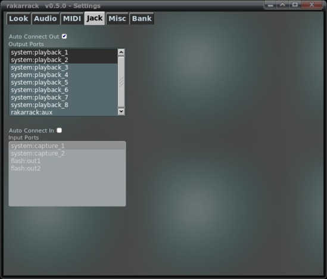
Jack auto conection ports
Here you can select if you want to auto connect the Jack ports Input and Output, you can select any of the available ports for each type of port.
If you select a single Input port, will be connected to the both rakarrack Input Ports.
IMPORTANT: The number of selected Output ports needs to be an odd number, also the number of selected Input ports need to be a odd number if it's greater than 1.
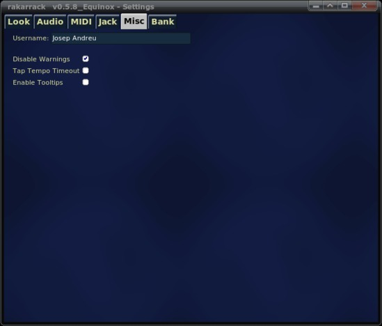
Author
Here you can define a nickname that was recorded in the presets that are created. The development team intends to create banks of effects created by users. These presets should assume the same license with which this program is released (GPL version 2 or higher) and suggest carrying an identification in the form First Name Last Name (nick). Of course you have to give a descriptive name to your preset. If you have a good preset and want to share or want to be included in future versions, send it to this address holborn@users.sourceforge.net
Disable Warning
Enabling this option will disable Warning and Error message.
Tap Tempo Timeout
Enable/Disable the Tap Tempo timeout, if it's enabled, 8 seconds after the last signal, Tap Tempo is put to Off
Enable Tooltips
Enable/Disable widget tooltips
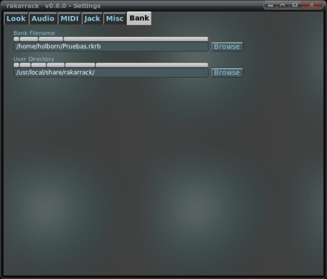
Bank
Here you can specify which file bank is loaded when program starts.
User Directory
You can define here the driectory where rakarrack will look to find user banks that will be displayed in the Bank Window "User Banks" choice, in order to have a fast way to load user banks
We created a few shortcuts to make it easier to manage the program.
| Key | Function |
|---|---|
| R | Enable rakarrack |
| T | Enable Tuner |
| M | Enable MIDI Converter |
| L | Open the load preset window |
| S | Open the save preset window |
| B | Open the bank window |
| G | Tap Tempo |
| E | Open the MIDI Learn Window |
| I | Open the Settings window |
| O | Open the Order window |
| N | New preset |
| P | Compare |
| + | Next Preset |
| - | Previous Preset |
| F1 | Open the Help window |
| F2 | Decrease -1 the Output Volume |
| F3 | Increase the Output Volume |
| F5 | Looper Play |
| F6 | Looper Stop |
| F9 | Hide/Show unused Effects |
| F10 | +10 dB Booster |
| F12 | FullScreen |
| A | Open the Analog Interface Window |
| X | Exit |
| Esc | Exit |
The effects are enabled pressing the keys (1,2,3,4,5,6,7,8,9,0) . These keys are unrelated to the effects but with his position. So the key 1 trigger the effect that in the first position (the first effect of the left in the first line) and so on until 0 (the latter effect to the right in the second line).
The Keyboard Up/Down - Left/Right arrows decrease/increase value by "1", Shift+(Left/Right Arrow) decrease/increase value by "10", Ctrl+(Left/Right Arrow) decrease/increase value by "100" also you can navigate and adjust trough the parameters with you computer keyboard with the Tab, Up/Down arrow and space bar keys.